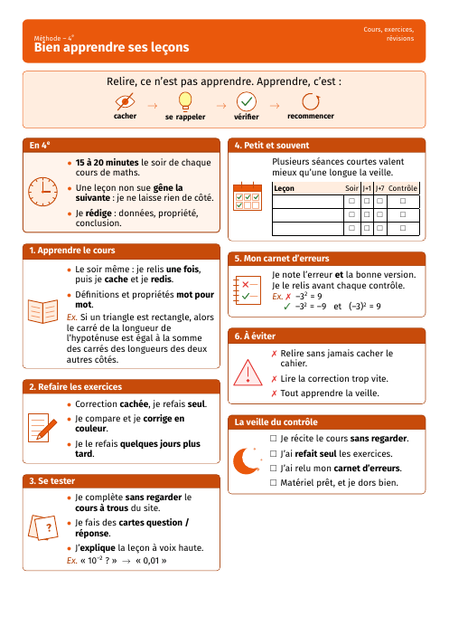
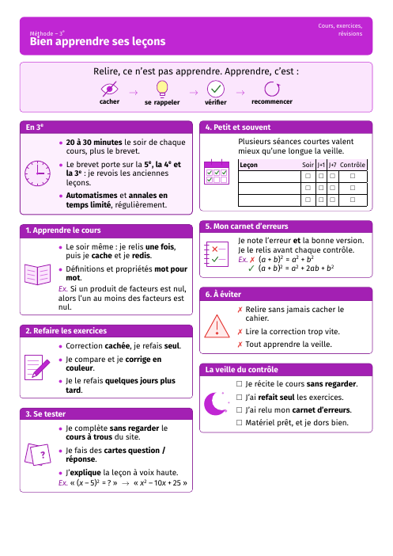

Relire, ce n'est pas apprendre.Apprendre, c'est :
- Cacher
- Se rappeler
- Vérifier
- Recommencer
Ma fiche selon mon niveau
Choisis ton année : la fiche à imprimer (1 page) correspond à ton niveau.

En 6e
- Je vérifie mon agenda (ou l'ENT) chaque soir.
- 10 à 15 minutes le soir de chaque cours de maths.
- Mes tables de multiplication par cœur.
Exemples en 6e
Si deux droites sont perpendiculaires à une même droite, alors elles sont parallèles.
Carte : « 7 × 8 ? » → « 56 »
✗ 0,5 × 0,5 = 2,5 ✓ 0,5 × 0,5 = 0,25

En 5e
- Je regarde mes devoirs à l'avance, pas la veille.
- Environ 15 minutes le soir de chaque cours de maths.
- Je justifie en citant la propriété.
Exemples en 5e
Dans un triangle, la somme des mesures des trois angles est égale à 180°.
Carte : « (−4) × (−3) ? » → « 12 »
✗ 5 + 3 × 2 = 16 ✓ 5 + 3 × 2 = 5 + 6 = 11

En 4e
- 15 à 20 minutes le soir de chaque cours de maths.
- Une leçon non sue gêne la suivante : je ne laisse rien de côté.
- Je rédige : données, propriété, conclusion.
Exemples en 4e
Si un triangle est rectangle, alors le carré de la longueur de l'hypoténuse est égal à la somme des carrés des longueurs des deux autres côtés.
Carte : « 10−2 ? » → « 0,01 »
✗ −3² = 9 ✓ −3² = −9 et (−3)² = 9

En 3e
- 20 à 30 minutes le soir de chaque cours, plus le brevet.
- Le brevet porte sur la 5e, la 4e et la 3e : je revois les anciennes leçons.
- Automatismes et annales en temps limité, régulièrement.
Exemples en 3e
Si un produit de facteurs est nul, alors l'un au moins des facteurs est nul.
Carte : « (x − 5)² = ? » → « x² − 10x + 25 »
✗ (a + b)² = a² + b² ✓ (a + b)² = a² + 2ab + b²
La méthode
Apprendre le cours
- Le soir même : je relis une fois, puis je cache et je redis.
- Définitions et propriétés mot pour mot (exemple dans ta fiche).
Refaire les exercices
- Correction cachée, je refais seul.
- Je compare et je corrige en couleur.
- Je le refais quelques jours plus tard.
Se tester
- Je complète sans regarder le cours à trous (version élève sur le site), puis je vérifie.
- Je fais des cartes question / réponse.
- J'explique la leçon à voix haute.
Mon carnet d'erreurs
- Je note l'erreur et la bonne version, et je le relis avant chaque contrôle.
Petit et souvent
Plusieurs séances courtes valent mieux qu'une longue la veille.
À éviter
- Relire sans jamais cacher le cahier.
- Lire la correction trop vite.
- Tout apprendre la veille.
La veille du contrôle